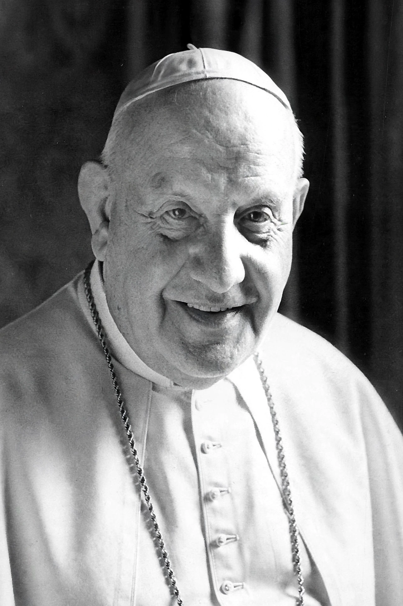

| Pope St John XXIII | |
 | |
| Born | Angelo Giuseppe Roncalli, 25 November 1881, Sotto il Monte, Kingdom of Italy |
|---|---|
| Died | 3 June 1963 (aged 81), Apostolic Palace, Vatican City |
| Papacy began | 28 October 1958 |
| Papacy ended | 3 June 1963 |
| Predecessor | Pius XII |
| Successor | Paul VI |
| Canonized | 27 April 2014 by Pope Francis |
Pope John XXIII (born Angelo Giuseppe Roncalli; 25 November 1881 – 3 June 1963) was head of the Catholic Church and sovereign of the Vatican City State from 28 October 1958 until his death in 1963. He is best remembered for convening the Second Vatican Council (1962–1965), which opened the Church to the modern world, and for his encyclicals Mater et magistra (1961) and Pacem in terris (1963). Affectionately known as the "Good Pope" (il Papa buono), he was canonised in 2014.
Roncalli was born into a farming family in Sotto il Monte, Lombardy, the fourth of thirteen children. Ordained in 1904, he served as an army chaplain and stretcher-bearer in the First World War, then as a Vatican diplomat in Bulgaria, Turkey and Greece, and as Apostolic Nuncio to France from 1944. As delegate in Turkey he helped save Jewish refugees during the Second World War. He became Patriarch of Venice in 1953 and a cardinal.
Elected at nearly 77 after the death of Pius XII, John was widely expected to be a caretaker pope. Instead, in January 1959 he announced his intention to convene an ecumenical council — the first since Vatican I a century earlier. The Second Vatican Council opened on 11 October 1962 and set in motion sweeping reforms, including the vernacular liturgy and a new openness to other Christians, other religions and the modern world, summed up in his word aggiornamento ("updating").
His social encyclical Mater et magistra developed Catholic social teaching sixty years after Rerum novarum, and Pacem in terris (1963) — addressed for the first time to "all men of good will" — set out a comprehensive doctrine of human rights and peace during the Cold War. During the Cuban Missile Crisis of October 1962 his public appeal for peace was credited by both Kennedy and Khrushchev's circles with helping to ease tensions.
John XXIII died of stomach cancer on 3 June 1963, before the Council he had opened concluded. He was beatified by John Paul II in 2000 and canonised by Pope Francis on 27 April 2014, alongside John Paul II.